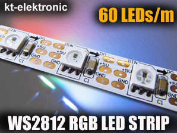
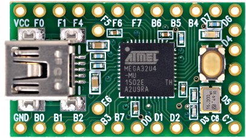
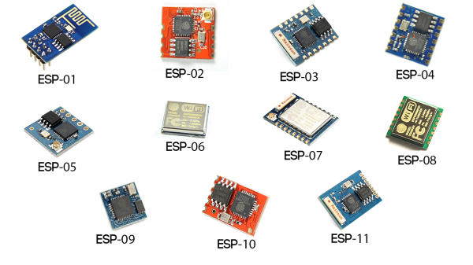
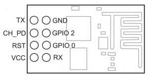
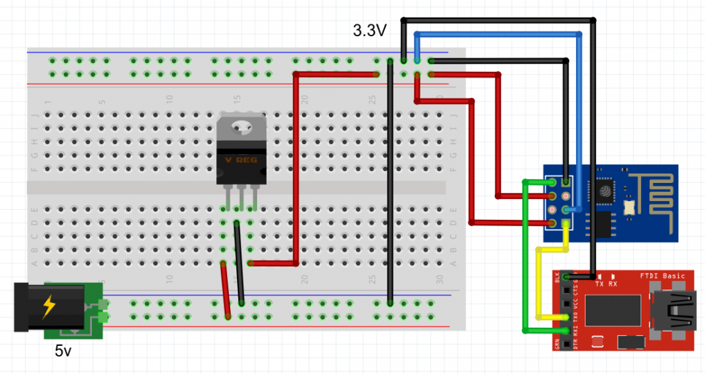
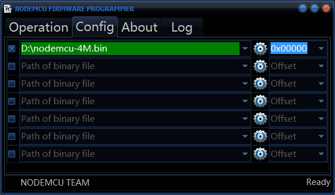
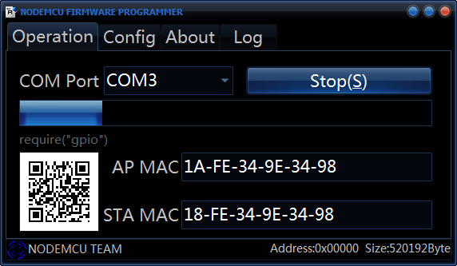

Ambi-like avec 240 LED WS2812B et une Teensy 2.0
Introduction
J’ai terminé il y a quelques semaines la construction de mon bureau avec pc intégré. Je me devais d’y ajouter un peu de couleurs !
J’ai donc réalisé un nouvel Ambi-like avec une ruban de 4m composé de 240 LED WS2812B soit 60 LED par mètre contrairement à mon ancien Ambi-like de la télévision qui lui est constitué d’uniquement 50 LED WS2801.
J’en ai profité pour passer sur de l’Arduino-like (au lieu d’un Raspbery Pi), sur les conseils de plusieurs personnes, mon choix s’est porté sur une Teensy 2.0 vendu par PJRC et qui permet de commander facilement un système Ambi-like.
Le but principal ici est de pouvoir restituer le flux vidéo de l’ordinateur sur les LED, on verra qu’il est également possible de capturer le sons et également mettre des couleurs dynamiques d’ambiance.
Pourquoi ce choix de matériel ?
Un système Ambi-like se fait généralement avec des LED WS2801 car elles sont adressables contrairement aux LED WS2811/WS2812. J’avoue avoir acheté ce ruban sur un coup de tête (le nombre de LED au mètre m’a attiré) sans avoir vérifié la compatibilité avec les systèmes Ambi-like du moment… Mais j’aime les défis et surtout les nouvelles choses :)

Pour le choix du contrôleur, j’avais déjà joué avec un Raspeberry Pi précédemment, je voulais donc tenter l’aventure sur un autre périphérique. Un Arduino correspond très bien au besoin, c’est petit, possède une faible consommation énergétique et il existe plusieurs systèmes d’Ambi-like dédiés. J’ai donc commandé une Tensy 2.0 qui est encore plus petite qu’un Arduino Uno et possède une plus grande puissance de calcul (ça se révélera important étant donné que mes LED ne sont pas adressables).

Programmation
J’ai donc découvert la programmation sous Arduino grâce à cette Teensy 2.0. A vrai dire avec quelques connaissance en C, c’est relativement simple !
Il existe un logiciel de développement dédié pour les Arduino, à télécharger ici, par défaut Arduino ne prend pas en charge les Teensy, il faut donc télécharger et installer sur votre installation d’Arduino le ‘patch’ Teensyduino.
Il embarque nativement des libraires de développement, à utiliser selon la fonction que vous voulez donner à votre système.
Ici, nous voulons commander notre ruban à LED via notre ordinateur en passant par la Teensy. Pour cela nous utiliserons deux logiciels concurrent nommés Ambibox et Prismatik.
Ces deux logiciels peuvent fonctionner en communiquant avec un système Adalight (embarqué sur la Teensy).
Le problème, c’est qu’Adalight est développé pour fonctionner avec des LED 2801. Après quelques heures de recherches, j’ai réussi à trouver un fork d’Adalight fonctionnant avec des LED WS2812.
Ce fork d’Adalight repose malheureusement sur une ancienne librairie FastSPI_LED2 (permettant de commander des LED WS2811/WS2812), qui a évoluée et se trouve maintenant sous le nom FastLED (disponible sous l’éditeur Arduino).
J’ai donc résolu mon problème en modifiant légèrement le code du fork pour utiliser la dernière version de la librairie FastLED, ma version disponible sur Github (dernière mise à jour 22/11/2015).
Je ne vais pas vous expliquer comment charger le programme sur la Teensy, c’est très simple et repose sur le même principe que n’importe quel Arduino, pour plus d’informations, voir ici.
Montage
J’ai donc simplement découpé des bandes pour chaque longueur des écrans, bien penser à respecter le sens des flèches du ruban (pour le signal).
J’ai relié chaque bandes bout à bout par trois fils soudés de chaque côté et relié mon alimentation 5v 8A en entrée et sortie du ruban (préféré plusieurs points d’alimentation sur votre ruban).

Comme vous pouvez le voir ci-dessous, j’ai connecté les trois fils du ruban sur les ports VCC, GRD B1 de la Teensy 2.0. Le port B1 est paramétrable dans ma version de l’Adalight.

Communication avec Adalight
Adalight est très répandu et est de plus en plus reconnu par les logiciels Ambilight. J’ai donc testé les deux plus connus du moment, Prismatik et Ambibox !

Update - 22/11/2015
Suite à mon déménagement, j’ai dû me remettre dans la programmation de la Teensy et je viens donc d’en profiter pour mettre à jour ma version d’Adalight.
Le plus gros problème que j’ai eu après tout ce temps (et un nouvelle installation de Windows) c’est la configuration de Prismatik !
Penser à bien installer les drivers pour votre Teensy, les drivers sont embarqués dans le ‘patch’ Teensyduino (voir au début de l’article) et par la suite récupéré le port dans la gestion de vos périphériques Windows.

Flash d’un ESP8266

Prérequis
Voici les prérequis pour réaliser le flash d’un esp8266 :
- 1 esp8266 01;
- 1 FTDI FT232RL USB to TTL;
- 1 alimenation 5v;
- le firmware nodemcu afin de développer en LUA;
- le logiciel ESP8266Flasher afin d’installer le firmware sur votre esp8266.
Note
Vous avez besoin d’un bon régulateur 3.3v avec une alimentation qui peut délivrer de 500 à 600mA.
Si vous avez des erreurs dès le démarrage du wifi, l’alimentation est probablement en cause.
ESP8266 pins

Câblage

Attention !
N’utiliser pas le 3.3v de votre FTDI (si disponible) mais passer plutôt par un régulateur LF33CV (5v to 3.3v).
Flash
La procédure est détaillée sur le Github du projet.
Veuillez à bien respecter la procédure dans l’ordre étape par étape.
Dès lors que votre ESP8266 est alimenté, vous pouvez lancer le logiciel.
Par défaut un firmware (NodeMCU) est embarqué.
A savoir qu’il existe plusieurs types de firmware, dont les deux plus populaires :
- NodeMCU en LUA
- ESP8266 AT en C
Télécharger la dernier version de NodeMCU (actuellement nodemcu_float_0.9.6-dev_20150704).
Dans Config, supprimer toute la configuration et rajoutez uniquement nodemcu_float_0.9.6-dev_20150704.bin (en cochant bien la checkbox de gauche).

Dans Operation, séléctionner le port COM correspondant à votre FTDI et lancez le flash.
Si l’esp est bien détecté un QRcode doit apparaître dans la seconde et la barre de progression doit commencer à avancer.

A la fin de l’update, une icône verte apparaîtra pour confirmer le succès de l’opération.
Vous pouvez dès lors débrancher votre ESP8266 et retirer le GPIO_0 du GND.
Problème de détection ?
Si l’ESP8266 n’est pas détecté par le logiciel, débranchez et rebrancher l’alimentation de l’ESP8266 pour forcer la détection.
Température et pression (BMP180) sous Jeedom via un ESP8266
Matériel
- 1 ESP8266;
- 1 capteur BMP180 (température et pression);
- 1 régulateur LF33CV (5v vers 3.3v);
- 1 résistance 1kΩ (pull-up).
Câblage

Jeedom
Créer un device virtuel.

Veuillez à bien noter les ID de deux informations (température et pression), ici 535 et 536. Ces deux ID sont à insérer dans la requête HTTP à envoyer à Jeedom.
Code
Résultat

Distributeur de croquettes sous Jeedom via un ESP8266
Introduction
Afin d’éviter LE problème quotidien : « nourrir le chat affamé », j’ai réalisé un distributeur connecté à Jeedom.
Ce distributeur est constitué d’un simple moteur 12v actionné par un double relais et contrôler par un ESP8266.
Prérequis
Afin de réaliser ce montage, il vous faut :
- 1 ESP8266;
- 1 régulateur LF33CV (5v vers 3.3v);
- 1 résistance 1kΩ (pull-up);
- 1 double relais module (5v).
Principe
Le distributeur est constitué d’un moteur 12v qui fait tourner une tige filetée à laquelle est fixé un plateau.
Le plateau est verrouillé en rotation par deux fine tiges à la base du distributeur.
En conséquence, selon le sens de rotation du moteur, la plateau descend ou monte.
Un tuyau de plus gros diamètre englobe le tout afin de récupérer les croquettes et les verse à la base par un bec.
Le distributeur est connecté à Jeedom par un ESP8266 et actionne le double relais sur requête HTTP.


Câblage

Code
Jeedom
Création d’un script pour communiquer avec l’esp8266 du distributeur :

Création d’un virtuel pour interagir avec le script précédent :

Création d’un scénario pour automatiser la distribution des croquettes :

Résultat

Communication sans fil indépendante via deux esp8266
Introduction
La problématique de ce projet est de réaliser soit même une communication sans fil. Dans ce cas précis, une communication wifi et autonome, c’est à dire sans point d’accès provenant d’un routeur (ou autre box). Le but final étant de relier une cellule IR de détection de présence (se trouvant à l’extérieur) à une alarme (à l’intérieur de la maison).
Prérequis
Je pars du principe que :
la détection de présence sur la cellule IR provoque un état haut sur une entrée GPIO;
l’alarme sera mise en fonction via un état haut d’une sortie GPIO.
Il vous faudra :
Attention !
Le code est en LUA et nécessite donc d’avoir les ESP8266 avec le firmware nodemcu.
Principe
Un esp va servir de serveur, c’est à dire qu’il va :
- Déclarer son propre point d’accès wifi;
- Instancier un serveur HTTP;
- Attendre une requête HTTP et produire une action en conséquence de cette requête.
Le deuxième esp va lui servir de client, c’est à dire qu’il va :
- Essayer de se connecter sur le point d’accès wifi du serveur (pendant 1 min, led verte clignotante);
- Allumer la led verte pour indiquer que la connexion au serveur est établie;
- Attendre un changement d’état du port GPIO_2 (la cellule IR);
- Envoyer une requête HTTP au serveur avec l’état du port GPIO_2;
Schémas


Code
Réalisation


Luminosité sous Jeedom via un ESP8266
Introduction
Cet article met en avant la mise en place d’un capteur TSL2561 et d’un ESP8266 afin de récupérer la luminosité sous Jeedom.
La communication des données se fera à travers un broker MQTT.
Prérequis
Pour réaliser ce montage, il vous faut :
Attention !
Le code est en LUA et nécessite donc d’avoir l’ESP8266 avec le firmware nodemcu.
Câblage
[En attente du capteur TSL2561 sous Fritzing]
Code
Principe
Le principe est le suivant :
- L’ESP créé un client MQTT avec un id unique;
- Il se connecte au broker MQTT;
- A chaque changement de valeur du capteur TSL2561, le client MQTT publie les données sur un topic particulier;
- Le broker MQTT reçoit les données et les publie pour chaque client ayant souscrit à ce topic.
Jeedom
Il vous faut tout d’abord installer le plugin gratuit MQTT dans Jeedom.
Dès lors que votre ESP8266 publiera sur le broker MQTT, le plugin Jeedom ajoutera automatiquement le device TSL2561 :


Résultat

Affichage de valeurs sur un écran I2C via un ESP8266
Introduction
Cet article met en avant l’utilisation d’un écran I2C OLED et d’un ESP8266 afin d’afficher des valeurs en provenance d’un broker MQTT.
Prérequis
Pour réaliser ce montage, il vous faut :
- 1 ESP8266;
- 1 écran I2C 128×64 OLED;
- 1 régulateur LF33CV (5v vers 3.3v);
- 1 résistance 1kΩ (pull-up);
- 2 résistances 4.7kΩ.
Attention !
Le code est en LUA et nécessite donc d’avoir l’ESP8266 avec le firmware nodemcu.
Câblage

Code
Principe
Le principe est le suivant :
- L’ESP créé un client MQTT avec un id unique;
- Il se connecte au broker MQTT;
- Le client souscrit à un topic particulier où les données que l’on désire sont publiées;
- L’ESP affiche une première fois les données à l’écran;
- Puis à chaque fois que le broker MQTT reçoit des nouvelles données sur ce topic, notre client met à jour les données à l’écran.
Résultat